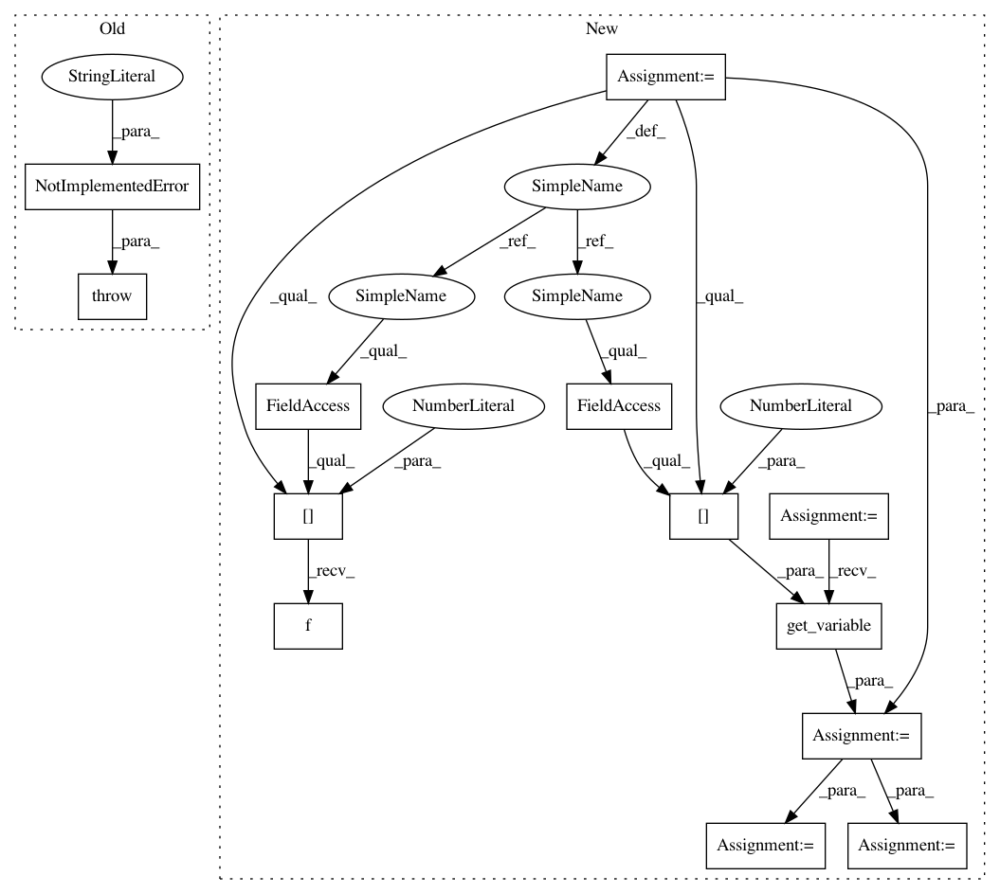

5cf0a414aa1f7c17fdc0eced712de551c335a25c,src/graph_transpiler/webdnn/frontend/chainer/functions/activation.py,,_convert_log_softmax,#Any#Any#,65
Before Change
@ChainerConverter.register_handler("LogSoftmax")
def _convert_log_softmax(converter: ChainerConverter, c_op: "chainer.functions.LogSoftmax"):
// TODO
raise NotImplementedError("[ChainerConverter] LogSoftmax is not supported")
// noinspection PyUnusedLocal
@ChainerConverter.register_handler("LSTM")
After Change
@ChainerConverter.register_handler("LogSoftmax")
def _convert_log_softmax(converter: ChainerConverter, c_op: "chainer.functions.LogSoftmax"):
x = converter.get_variable(c_op.inputs[0])
axis = x.order.axes[1]
max_x, = Max(None, axis=axis)(x)
exp_delta_x, = Exp(None)(x - max_x)
sum_exp_delta_x, = Sum(None, axis=axis)(exp_delta_x)
log_sum_delta_exp, = Log(None)(sum_exp_delta_x)
y = x - (log_sum_delta_exp + max_x)
converter.set_variable(c_op.outputs[0](), y)
// noinspection PyUnusedLocal
In pattern: SUPERPATTERN
Frequency: 4
Non-data size: 13
Instances
Project Name: mil-tokyo/webdnn
Commit Name: 5cf0a414aa1f7c17fdc0eced712de551c335a25c
Time: 2017-11-30
Author: y.kikura@gmail.com
File Name: src/graph_transpiler/webdnn/frontend/chainer/functions/activation.py
Class Name:
Method Name: _convert_log_softmax
Project Name: mil-tokyo/webdnn
Commit Name: 5cf0a414aa1f7c17fdc0eced712de551c335a25c
Time: 2017-11-30
Author: y.kikura@gmail.com
File Name: src/graph_transpiler/webdnn/frontend/chainer/functions/activation.py
Class Name:
Method Name: _convert_log_softmax
Project Name: mil-tokyo/webdnn
Commit Name: 1ebebfab6869108667f3afced9a8ab70229887e7
Time: 2017-11-30
Author: y.kikura@gmail.com
File Name: src/graph_transpiler/webdnn/frontend/chainer/functions/math.py
Class Name:
Method Name: _convert_maximum
Project Name: mil-tokyo/webdnn
Commit Name: d09e215274aa7212b4fc2caf070dd1eacf110134
Time: 2017-07-04
Author: y.kikura@gmail.com
File Name: src/graph_transpiler/webdnn/frontend/chainer/functions/basic_math.py
Class Name:
Method Name: _convert_absolute
Project Name: mil-tokyo/webdnn
Commit Name: 7cab92a106ec13aee7e14a9674340e8cc13c7e53
Time: 2017-07-15
Author: y.kikura@gmail.com
File Name: src/graph_transpiler/webdnn/frontend/chainer/functions/activation.py
Class Name:
Method Name: _convert_crelu